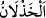

yuvasına döndürdüğü gibi, sizi de rızıklandırır.”[134]
Biri şöyle anlatıyor: “Çölde bulunuyordum. Kervanın epeyi önünden giderken, ileride
birinin olduğunu farkettim. Hızlı hızlı yürümeye başladım. Nihâyet yetiştim. Bir de
baktım ki elinde bir âsâ ve su matarası bulunan ve titreye titreye yürüyen bir kadın! Bu
kadıncağızın yolunu şaşırmış olduğunu zannettim. Elimi cebime sokup yirmi dirhem
çıkardım ve “bunları al ve bekle birazdan gelecek olan kafile seni alır. Kafile ile
birlikte yoluna devam et, geceleyin de yanıma gel hâcetini gidereyim” dedim. Kadın, eli
ile havaya şöyle bir işaret etti. Bir de ne göreyim, avucunun içi dinar dolmamış mı?
Kadın bana şöyle dedi: “Sen şu dirhemleri cebinden çıkardın, bense bu dinarları
gaybden aldım.” Nitekim Hâfız Şîrâzî der ki:
Çık bu felek hanesinden dışarı, isteme ekmek,
Çünkü bu dünyanın siyah kâsesi, sonunda misâfiri öldürür.
Kuşeyrî (rh.a.) şöyle diyor: “Gerçek yardım Allah’ın sana, nefsine karşı yardım
etmesidir. Çünkü nefsin, senin en büyük düşmanındır. Gerçek yardım, Allah’ın, nefsinin
fitne sâiklerini, rahmet koruyucuları ile çökertmesidir. Neticede, bu yardımlar sâyesinde
şehvet orduları dağılıp gider.
Velâyet, beşeriyet vasıflarından ve nefis şehvetlerinden ibâret olan bu dâvetçilerin
saçmalıklarından kurtulmuş olarak sadece Allah’ın olur.
(
) Allah Teâlâ’nın kişi ile günahlar arasını açması, demektir.
Allah Teâlâ, kime yardım ederse, karar esnâsında kötü şeyleri bertaraf ederek onun
elinden tutar. Kimi de yüzüstü bırakırsa, ipini boynuna takar, kötü iradesi ile başbaşa
bırakır, uçsuz bucaksız sahrâlarda şaşkın bırakır. Böyle biri gâh arsız arsız doğuya
gider; gâh kendisine hürmet gösterilmeyen biri olarak batıya gider. Hak Teâlâ’nın
bıraktığı birinin elinden kimse tutamaz, kırığını kimse birleştiremez.
Bütün bu anlatılanlar üzerine inananlar, samimi bir tazarrû ile bu tehlikelerden emân
bulmak için; kendisinin güç ve kudretten uzak olduğunu belirtip, âcizliğini ifade ederek
ihlâs ile Allah’a sığınmalıdırlar. Allah’ın afv örtüsünün, günahlarını örtmesi için
sadece Allah’a tevekkül etmelidirler. En yüce varlık olan Allah’dan başkasının güç ve
kudreti yoktur.”
Eğer Allah Teâlâ olmazsa insana yâr,
İnsanoğlu günahtan nasıl olur perhizkâr?
[132]. Aclûnî, II, 509.